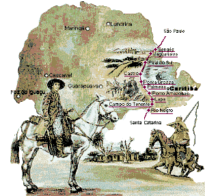

História do gaúcho

O tradicionalismo foi inaugurado como um movimento pelos intelectuais ligados ao Partenon Literário, fundado em 1868,, associação que tinha entre seus objetivos prestigiar o folclore e o regionalismo, buscando definir a identidade cultural do estado e desenvolvendo intensa atividade literária onde o gaúcho figurava em relevo. As tradições continuaram sendo prestigiadas ao longo do século XX, com variados enfoques e motivações, especialmente depois da fundação do Centro de Tradições Gaúchas 35 em 1948, que serviu de modelo para o surgimento de um grande número de entidades semelhantes pelo Brasil afora, pelo apoio da oficialidade, e pela organização do Movimento Tradicionalista Gaúcho em 1966, uma instituição que estabeleceu suas diretrizes ideológicas e práticas básicas, regulamentadas por extensa documentação.
tradiçao gaucha
A música gaúcha de origem tradicionalista parece ter origem na escola literária do parnasianismo, por sua semelhança quando canta coisas da natureza e do ambiente como: a terra, o chão, os costumes, o cavalo - e pela musicalidade, sempre buscando a rima num arranjo muito acertado com as melodias, criando entre letra, música e dramatização, uma dinâmica que rebusca origens e paixões.
O estilo musical gauchesco mostra também origens fortes na música flamenca espanhola, e na música portuguesa. Os campos harmônicos bem arranjados, denotam ritmos bem elaborados e melodias com dois ou mais violões.
tabela gaucha
| empresa |
Contato |
estado |
| Estancia Santa cesilia |
Mano lima |
Rio Grande do Sul |
A nossa tradição
Musica gaúcha.
Música nativista é um termo geral usado no estudo da música de Rio Grande do Sul, Santa Catarina e Paraná, para designar um determinado ponto de vista diferente da chamada "música tradicional" no que tange aos diversos gêneros musicais que caracterizam a "música gaúcha" (surgida na cultura popular do Cone Sul - Argentina, Uruguai, parte do Paraguai e no Sul do Brasil), que tem como temas principais o amor pelas tradições presentes no ente folclórico denominado gaúcho: o campo, o cavalo, os valores, a culinária regional e a mulher. A música nativista é construída em cima de um andamento mais lento e intimista, com letras em geral conotativas e metafóricas. Seus maiores representantes foram Teixeirinha, José Mendes, Gildo de Freitas e Berenice Azambuja.
tredição gaúcha
| tradição |
musica |
danças |
| chimarrão |
nativista |
milonga |
| tiro de laço |
baile |
vaneira |
| ginetiada |
ricardo bergha |
bugio |
| paletiada |
cesar oliveira |
xote |
| churrasco |
baitaca |
vaneira |
| culinaria |
jorge guedes |
chamamé |
| rio grade do sul |
pedro ortaça |
missioneiro |
História dos Ginetes

Traduzido do inglês-Jineteada gaucha ou doma gaucha é um esporte tradicional na cultura gaúcha da Argentina e do Cono Sul – Paraguai, Uruguai, Chile e Rio Grande do Sul do Brasil. O objetivo é que o cavaleiro permaneça em um cavalo indomável por alguns segundos. O tempo especificado varia de 8 a 14 segundos, dependendo da categoria.
ginete
História do Mano Lima

Filho de Rubens Colombo de Lima e Alba Rita Battanoli de Lima. Após iniciar sua carreira artística passou a residir em São Borja. Caracteriza-se principalmente, em suas composições e canções, por sua irreverência e pelo uso de um linguajar rústico, próprio do gaúcho nascido e criado no interior. Suas músicas têm como instrumento principal uma gaita de botão, que ele mesmo toca. Foi homenageado no ano de 2016 com o prêmio Guri, em sua 19ª Edição, pelo grupo RBS.
É torcedor e cônsul do Sport Club Internacional.
Como gaúcho que canta e defende o Rio Grande do Sul, recebeu o apelido de "Filósofo dos Pampas" devido a suas composições.
Tem um filho chamado Pedro Lima, também cantor.
Mano Lima
churrasco gaúcho

É muito difícil precisar uma data ou referência exata sobre o surgimento do churrasco. Podemos presumir que logo quando nossos ancestrais pré-históricos dominaram o fogo, o homem passou a assar a carne proveniente das caçadas – percebendo que este processo a deixava mais macia e saborosa.
Mas olhando um pouco mais de perto a nossa realidade, aqui no Rio Grande do Sul, o churrasco tornou-se um dos pilares culturais da tradição gaúcha, com papel indispensável na identidade da região.
O jeito gaúcho de assar carnes surgiu por volta do século 17, em terras remotas nos pampas, nas comunidades indígenas catequizadas pelos jesuítas, sendo adotado posteriormente pelos tropeiros, que viriam a desenvolvê-lo nos locais por onde passavam.
Churrasco
tropeiros

Cada comitiva era dividida em lotes de sete animais, cada um aos cuidados de um homem que os controlava através de gritos e assobios. Cada animal carregava cerca de 120 quilogramas e chegava a percorrer até 3 000 quilômetros.[5]
Num sentido mais amplo, também designa o comerciante que comprava tropas de animais para revendê-las, e mesmo o "tropeiro de bestas", que usava os animais para, além de vendê-los, transportar outros gêneros para o comércio nas várias vilas e cidades pelas quais passava. No sentido mais estrito, "tropeiro" é o peão cuja função, na pecuária extensiva brasileira (inclusive nas comitivas), consiste em reunir pela manhã, cuidar durante o dia e alojar à noite a tropa de cavalos de serviço que os peões campeiros trocam durante a jornada de trabalho. Além de seu importante papel na economia, o tropeiro teve importância cultural relevante como veiculador de ideias e notícias entre as aldeias e comunidades distantes entre si, numa época em que não existiam estradas no Brasil.
Tropeiros
{kind=link}
{kind=link}